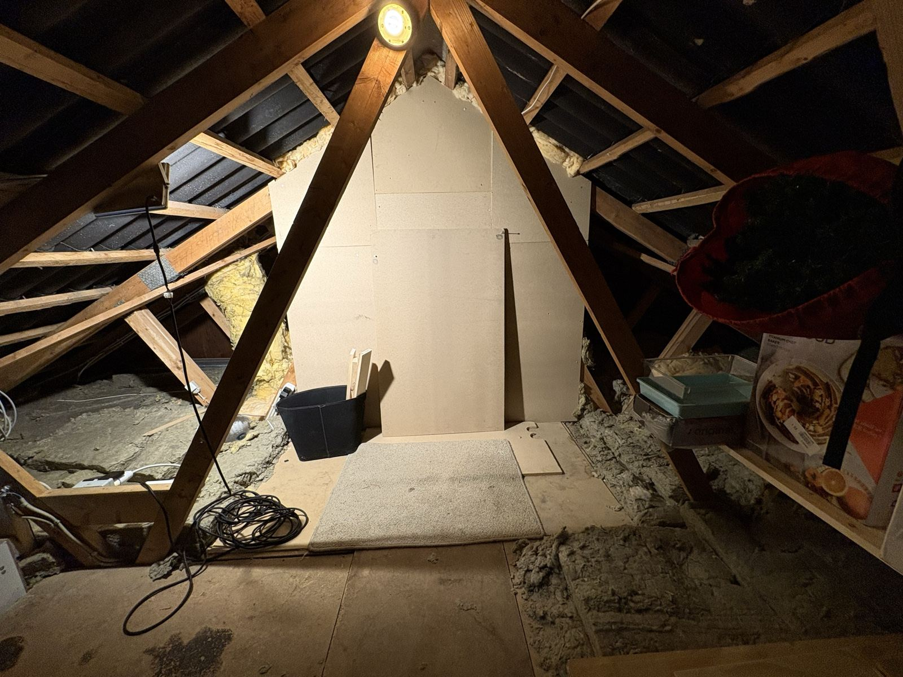
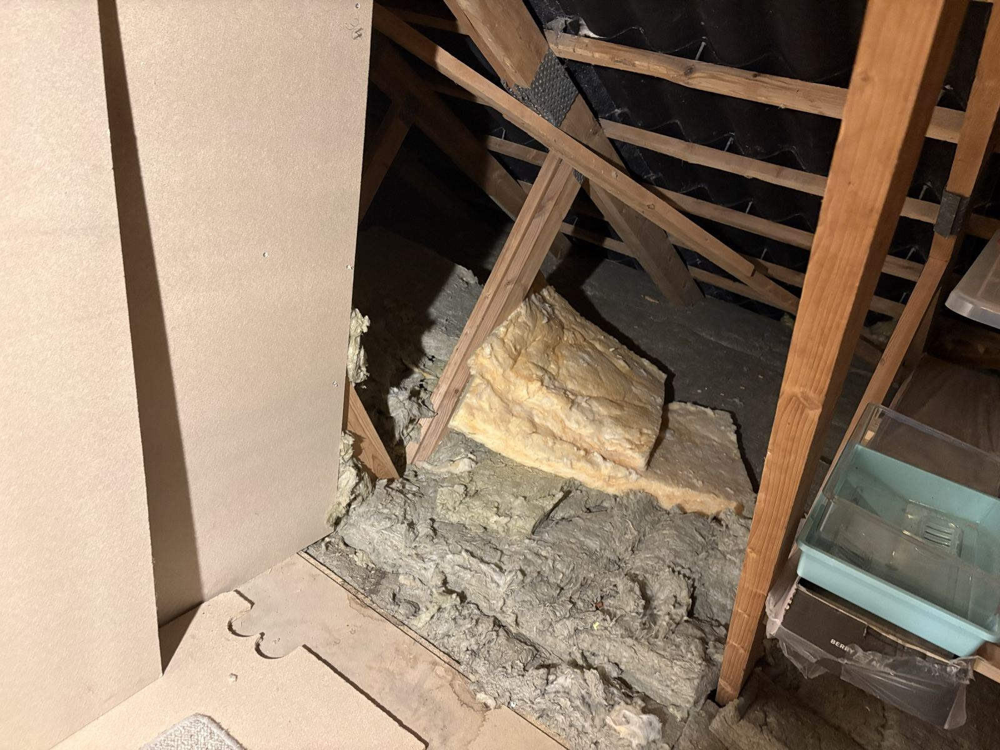
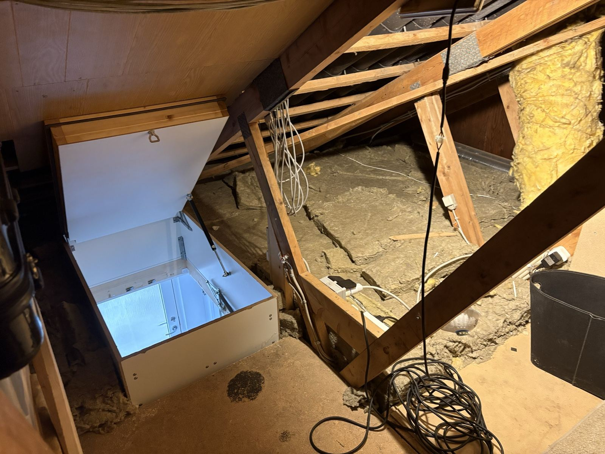
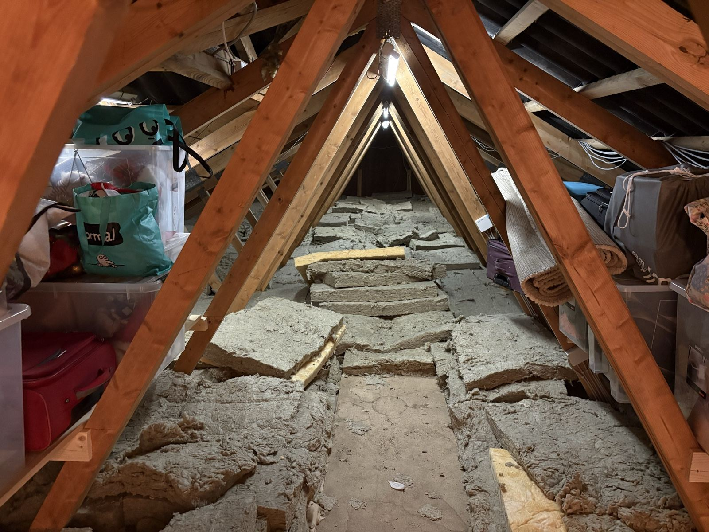
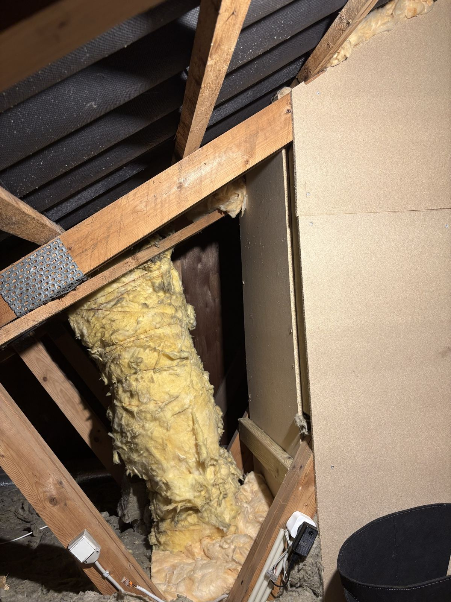
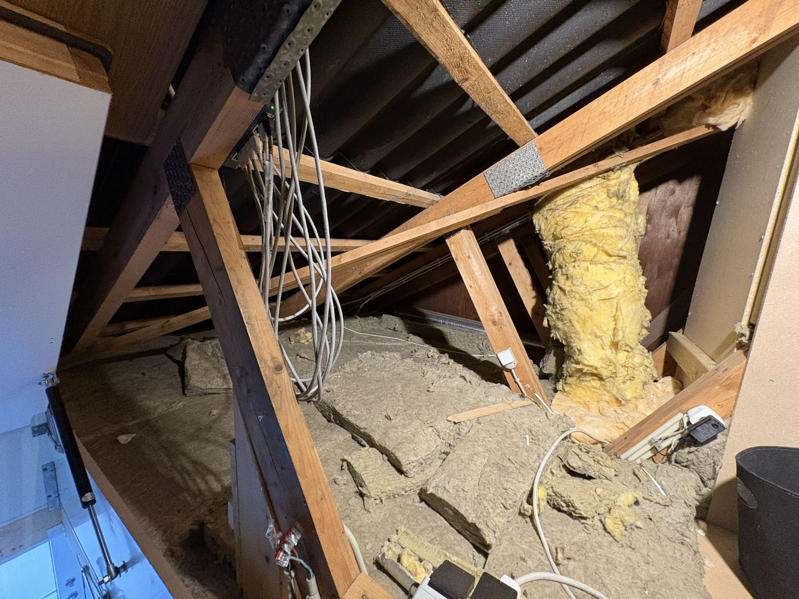
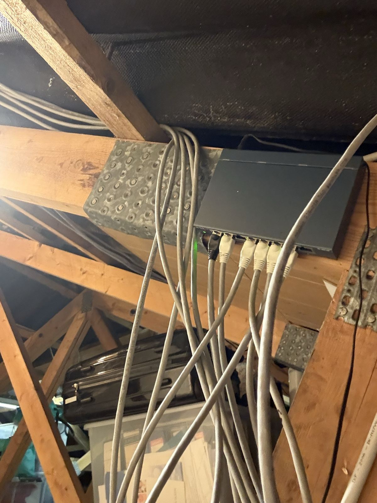
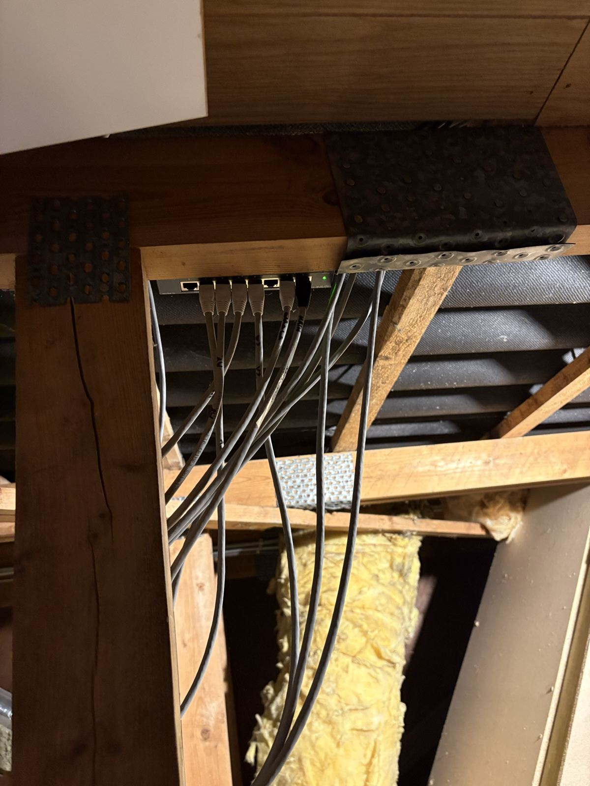

A planning sheet for a balanced mechanical ventilation system with heat recovery (in Danish: balanceret mekanisk ventilation med varmegenvinding) for your house. It covers where air goes in and out, every tube and joint, what to buy, what it costs, and whether it suits the Zealand climate. Use it to brief installers and compare quotes.
Five people in a 159 m² house produce roughly 11–14 litres of water vapour a day. In a closed-up Danish winter house that moisture ends up on the coldest surfaces, which is where mould starts. A central unit sized for about 300 m³/h, running continuously at about 175 m³/h, removes that moisture and keeps 80–90% of the heat. Your attic already holds the hot-water cylinder and the heat-pump electronics, so the unit goes up there beside them. With an asbestos-cement roof, the fresh-air intake and the exhaust go out through the gable wall, not through the roof.
Fresh, pre-warmed air is blown into the rooms where you sleep and sit. Stale, moist air is pulled out where water and smells are made. Air moves between the two through the hall and the gaps under the doors. The drawing shows the actual tube runs: each line is one Ø90 mm tube from a distribution box by the hatch to one ceiling valve. A double line is two tubes going to the same valve. All of it lies in the attic; downstairs you only see the valves.
The hot-water cylinder and the heat-pump electronics are inside the boarded box. The HRV unit goes on the box's right-hand side as you face it from the hatch, looking east: its south side (IMG_2482). The outside of the east gable is in the floor plan section. Click any photo to see it full size.








It's a good spot: close to the power, the cylinder's drain and the east gable, so the intake and exhaust ducts stay short. The catch is height. The diagonal truss member in IMG_2482 and the roof slope both cut into the space, so measure before choosing a unit:
Compare that with the unit's data sheet, including its connection spigots, plus about 60 cm clear in front of the filter door. If an upright unit doesn't fit, a flat unit made to lie on the attic floor, or a spot in front of the box on the boarded floor (IMG_2483), are the fallbacks.
The plan says a unit that isn't rated for a cold attic needs an insulated enclosure. You already have most of one: the box around the cylinder, which the cylinder's heat loss keeps above freezing. Extending its walls and lid around the spot on the right would keep the unit frost-free, keep the condensate pipe short and indoors, and bring the indoor-only units on the shortlist (Vaillant, Zehnder, Systemair) back into play.
Check that the box is insulated on every side, not only at the top edges, and leave a removable panel in front of the filter door.
The glass-wool-wrapped pipe (IMG_2484) goes up through the roof. It is most likely the drain vent from the soil stack, or the duct for the cooker hood or an old bathroom fan. The silver flexible duct in the insulation (IMG_2480, IMG_2485) is probably an old extract duct too. Find out what each one does before the installer comes:
None of them is a route for the HRV: they all go through the asbestos roof.
In IMG_2481 and IMG_2485 the batts are lifted, stacked and gapped in places, where people have walked and stored things. A gap lets heat out and leaves a cold patch on the ceiling of the room below, which is where mould starts. The tubes go on the ceiling joists first anyway, so that's the moment to lay the batts back tight, top them up, and keep storage on the boarded areas.
The switch on the truss beside the hatch (IMG_2486, IMG_2487) feeds a cable to each bedroom and the living room, so the computers, TV and console don't need wifi. The cables lie on the same ceiling joists the tubes will use.
The roof is built from factory-made trusses (gitterspær), held together with nail plates. Each diagonal and post carries load. No member may be cut, notched, drilled or moved to make room for the unit, the boxes or a duct, and no nail plate removed. Everything has to fit between them. Put this in every quote request.
Two settings matter. Normal runs all day, every day. Boost kicks in from a humidity sensor when someone showers or cooks, or when the house is full. The building regulations (BR18) set a minimum of 0.3 l/s per m² for the house, which for 159 m² is 48 l/s, exactly the normal setting below. They also set fixed extract amounts at boost: 20 l/s from the kitchen, 15 from each bathroom and 10 from the laundry room. With five or six people the bedrooms set the real need: about 5 l/s per sleeping person keeps CO₂ under 1,000 ppm with the door closed. The two boys' rooms get a little extra because their windows stay shut.
| Room | Area | Who / what | Valve | Normal l/s | Boost l/s |
|---|---|---|---|---|---|
| Bedroom 1 (NW) | 12.6 m² | Daughter, 19, sometimes 2 people | supply | 10 | 13 |
| Bedroom 2 (SW) | 10.7 m² | Son, 16, gaming PC | supply | 7 | 9 |
| Bedroom 3 (S) | 8.5 m² | Son, 11, gaming PC | supply | 7 | 9 |
| Bedroom 4 (E) | 12.2 m² | You two | supply | 10 | 13 |
| Living room | 43.3 m² | everyone | supply ×2 | 14 | 20 |
| Kitchen | 13.3 m² | cooking | extract | 14 | 20 |
| Bathroom 1 (en-suite) | 6.4 m² | bathtub | extract | 12 | 16 |
| Bathroom 2 | 4.0 m² | shower | extract | 12 | 16 |
| Laundry room | 8.6 m² | washer, heat-pump dryer | extract | 10 | 12 |
| Entré, hall, gang | ≈13 m² | – | transfer | – | – |
| Total supply = total extract (balanced) | 48 = 173 m³/h | 64 = 230 m³/h | |||
The room areas are measured inside the walls from the floor plan and add up to about 135 m². The 159 m² registered in BBR is measured to the outside of the walls; that is the figure BR18 uses for the minimum airflow. The air volume (about 310 m³) and the air changes in the calculator use the inside measurements.
No sun means its outside walls are the coldest surfaces in the house, and with two people sleeping there it produces the most moisture of any bedroom. It gets 10 l/s, the same as yours. Point the supply valve's air towards the window and outside wall, and keep the bed and wardrobe 5–10 cm off the outside walls so air reaches them.
For a room whose window never opens, the supply valve is the only fresh air. A CO₂ sensor in bedroom 2, wired to the unit, can switch to boost on late gaming nights; most units accept one. Ventilation removes CO₂ and moisture but very little heat: a gaming PC adds 300–500 W, so these rooms will still run warm in summer. The night bypass helps a little.
Bathroom 2 (shower) is next to the children's rooms and probably takes most of the daily showers; Bathroom 1 (bathtub) is your en-suite. Each gets 12 l/s, rising to 16 l/s on boost, above the 15 l/s the rules ask for. A humidity sensor switches to boost after a shower and drops back on its own. Bathroom 1's replacement air comes through your bedroom, so both doors in that suite need a gap.
Every bedroom, bathroom and laundry-room door needs a 10–15 mm gap underneath, or a small transfer grille, so air can move towards the extract rooms. Without the gap a valve can't deliver its air. Leave the system on all year; switching it off is what lets mould come back.
There are three ways to connect the valves. The limit that decides between them is how much air a tube can carry quietly. A standard Ø90 mm semi-rigid tube (about 76 mm inside) carries up to about 40 m³/h (11 l/s) before the air starts to whistle at the valve. Bedroom 1, bedroom 4, the kitchen, both bathrooms and the laundry room need more than that on boost.
A distribution box near the unit splits the air into separate Ø90 tubes, one per valve, or two where the flow is high. Each tube runs unbroken from box to valve, with no joints along the way.
One Ø160 main duct leaves the unit and branches with T-pieces, getting smaller (Ø125, then Ø100) towards the end rooms, as in the first version of the drawing.
A 1-to-N box with exactly one Ø90 tube per room is the simplest idea, but six of the ten valves need more air on boost than one tube carries quietly.
| Box outlet | To valve | Boost flow | Tubes | m³/h per tube | Length each | Tube total |
|---|---|---|---|---|---|---|
| Supply box S (Ø160 in, 8 tubes out) | ||||||
| S1–S2 | Bedroom 1 | 13 l/s | 2 | 23 | 13.0 m | 26.0 m |
| S3 | Bedroom 2 | 9 l/s | 1 | 32 | 15.5 m | 15.5 m |
| S4 | Bedroom 3 | 9 l/s | 1 | 32 | 12.5 m | 12.5 m |
| S5 | Living room, north valve | 10 l/s | 1 | 36 | 9.5 m | 9.5 m |
| S6 | Living room, south valve | 10 l/s | 1 | 36 | 12.0 m | 12.0 m |
| S7–S8 | Bedroom 4 | 13 l/s | 2 | 23 | 6.5 m | 13.0 m |
| Extract box E (Ø160 out, 8 tubes in) | ||||||
| E1–E2 | Kitchen | 20 l/s | 2 | 36 | 5.0 m | 10.0 m |
| E3–E4 | Bathroom 2 (shower) | 16 l/s | 2 | 29 | 12.5 m | 25.0 m |
| E5–E6 | Laundry room | 12 l/s | 2 | 22 | 2.5 m | 5.0 m |
| E7–E8 | Bathroom 1 (tub) | 16 l/s | 2 | 29 | 4.0 m | 8.0 m |
| 16 tubes, 10 valves | 16 | 136.5 m | ||||
Lengths are measured along the drawn routes at the plan's scale, plus 1.5 m per tube for the drop into the valve box and slack at the distribution box. Rounded up to the next half metre. Buy about 10% extra: 150 m, usually three 50 m rolls. The shortest runs (Bedroom 4, laundry room, Bathroom 1) get restrictor rings at the box so they don't take more than their share. The longest (Bedroom 2, 15.5 m) is well within the usual 20–25 m limit for a radial tube.
All ten vents sit in the ceiling, fed from the attic. Supply vents spread fresh air along the ceiling, so it mixes with room air before it reaches anyone. Every vent is placed so the air has to cross the room between the vent and the door: extract vents in the corner farthest from the door, supply vents on the door side throwing their air away from it. The positions on the floor plan follow the rules below; the installer may shift them by up to half a metre to clear a rafter or a ceiling light.
| Vent | Type | Why |
|---|---|---|
| supply bedrooms, living room | Ceiling supply valve with adjustable throw (indblæsningsventil), from the NilAir range | Blows the air flat along the ceiling, where it clings and mixes. Air arriving at 17–19 °C then reaches you at room temperature, with no draught. The throw can be aimed at one wall or spread all round. |
| extract bathrooms, laundry room | Ceiling extract disc valve (udsugningsventil), metal or moisture-proof plastic | Simple, quiet and easy to take down and wash. The gap around the disc sets the flow. |
| extract kitchen | Extract valve with a washable grease filter | Catches the cooking grease the hood misses, so it never reaches the tubes or the unit. |
| Room | Where in the ceiling | Aim / notes |
|---|---|---|
| Bedroom 1 | Door side: about 1 m in from the door wall and 0.9 m from the hall-side wall | Throw towards the window and the north-west outside corner, about 2.2 m away; that corner is the coldest, most mould-prone spot in the house. Not above the head of the bed. |
| Bedroom 2 | Door side: about 1 m in from the door wall and 0.6 m from the hall-side wall | Throw towards the window and the outside corner. Not straight above the desk or gaming chair, to avoid a cool neck. |
| Bedroom 3 | On the gang wall at the other end from the door, about 1 m out and 0.7 m from the living-room-side wall | Throw towards the window. The smallest room, so keep the throw wide and gentle so no single jet reaches the bed or desk. |
| Bedroom 4 | About 1.2 m in from the living-room wall, just past both doors | Throw towards the east window, about 2.6 m away. The air then returns along the floor to the bathroom door. Not above the head of the bed. |
| Living room, north | About 3 m south of the arch and 2 m from the hall-side wall | Spread all round. Far enough from the arch that fresh air doesn't go straight out to the kitchen again. |
| Living room, south | About 2.3 m in from the big south window, near the middle of the room's width | Throw towards the glass. It warms and dries the window and stops the cold draught falling off it. |
| Kitchen | East end, 1.5–2 m from the hob, towards the laundry door | Never above the hob or inside the hood's reach; the hood handles cooking smoke. |
| Bathroom 1 (tub) | Far corner from the door, over the bathtub end, at least 0.3 m from the walls | Where the steam rises. Metal or moisture-proof valve. |
| Bathroom 2 (shower) | South end, the far side from the door (which is near the top of the east wall) | Drawn there because the shower probably is. If the shower is somewhere else, put the valve above or beside it, still away from the door. |
| Laundry room | East side, above the washer, dryer and sink, the far side from the kitchen door | Picks up the warm, damp air on laundry days. |
Mostly, yes. What matters is that air crosses the whole room between where it comes in and where it leaves, which is the door gap. For an extract vent that means the corner farthest from the door, exactly as you read.
A supply vent can do it either way round: in the far corner throwing towards the door, or on the door side throwing away from it. Danish installers usually choose the door side. The air runs along the ceiling to the outside wall, falls down the cold wall and window, which warms and dries them, and comes back along the floor to the door. That's what you want against mould, so the plan uses it.
What doesn't work: a supply vent next to the door blowing towards it (the air leaves straight away), or a vent right above a bed, desk or sofa.
BR18 doesn't say where vents go. It requires a good indoor climate without draught, and the ventilation designed to DS 447. In practice the installer checks two things at handover: air speed where people sit and sleep stays low (about 0.15 m/s in winter is the usual target), and noise stays under 30 dB(A) in bedrooms and living rooms. These distances are common practice and rules of thumb, not legal minimums.
Air always travels from the rooms with supply vents to the rooms with extract vents. In this house it follows three paths. The living-room-to-kitchen opening needs nothing; the doors need a gap.
| From → to | Normal | Boost | Door advice |
|---|---|---|---|
| West wing: bedrooms 1–3 | |||
| Bedrooms 1–3 → gang and hall | 24 l/s | 31 l/s | 10–15 mm gap under each bedroom door. Doors can stay shut, also at night. |
| Hall → Bathroom 2 | 12 l/s | 16 l/s | Gap under the bathroom door. |
| Hall → living room | 12 l/s | 15 l/s | The busiest door in the house (marked on the plan). It carries the bedrooms' surplus air to the kitchen side. It's the glazed door from the hall into the living room. Give it a 15 mm gap underneath (a carpenter can trim the bottom of the door), or a small transfer grille in its lower wooden panel or in the wall above it. Then it can be open or shut. |
| Living room and kitchen | |||
| Living room → kitchen | 24 l/s | 32 l/s | The open arch (marked on the plan). No door, so nothing needed. |
| Kitchen → laundry room | 10 l/s | 12 l/s | Gap under the laundry door. |
| Your suite | |||
| Living room → Bedroom 4 | 2 l/s | 3 l/s | Normal door gap. |
| Bedroom 4 → Bathroom 1 | 12 l/s | 16 l/s | Gap under the bathroom door. |
Either. With the gaps in place the system works the same with doors open or closed, so close bedroom doors for sleep and privacy as you like. Two exceptions: keep a bathroom door shut while showering and for about 30 minutes after, so the steam goes out through the extract instead of into the bedrooms. Keep the laundry door shut while the washer and dryer run.
Eastern Zealand has a mild, damp maritime climate: January averages around 1–2 °C, the heating season runs roughly September to May, and the Danish design temperature is −12 °C. Outdoor air is often 85–90% relative humidity in winter, but because it's cold it holds very little water. Warm it to 21 °C and its humidity drops to about 25%, so every cubic metre you bring in carries moisture back out. That makes ventilation the main tool against condensation and mould here.
| Option | Heat kept | Mould control | Bedrooms at night | Noise | Typical cost (DKK) |
|---|---|---|---|---|---|
| Central HRV in the attic recommended | ●●●●● | ●●●●● | ●●●●● | Quiet; unit away from bedrooms | 60–110k |
| Decentral wall units pairs through outside walls | ●●●○○ | ●●●○○ | ●●●○○ | Fan in each room, audible at night | 40–70k |
| Exhaust-only fans + wall vents | ●○○○○ | ●●●●○ | ●●○○○ | Quiet; cold draughts at vents | 15–30k |
| Airing + dehumidifier | ●●○○○ | ●●○○○ | ●○○○○ | Dehumidifier hum | 2–5k |
Heat recovery only saves heat on air that goes through the unit. If the house leaks a lot of air through gaps around windows, the ceiling, the hatch and the unused chimney, that air bypasses the exchanger. A blower-door test (tæthedsprøvning, roughly 3,000–5,000 DKK) tells you, and sealing the loft hatch, ceiling penetrations and chimney is cheap. The indoor-climate benefit holds either way; the energy saving depends on it.
Look for: about 300 m³/h at 100–150 Pa, counterflow exchanger ≥85% (BR18 requires at least 80%), EC fans with low specific fan power, a built-in humidity sensor, summer bypass, ISO ePM1 (F7) filter on the supply side, and app or wall control. The unit goes in a cold attic, so it must be rated for unheated spaces or sit in an insulated enclosure.
| Unit | Origin | Why consider it | Ask about |
|---|---|---|---|
| Nilan Comfort 300 | Denmark | Very common in Danish houses, with a wide installer network. Often installed in attics. | Attic installation kit and humidity sensor included. |
| Genvex ECO 375 | Denmark | Danish-built, efficient counterflow, with attic versions. | Attic-rated variant and frost protection. |
| Dantherm HCH range | Denmark | Flat horizontal units made to lie on an attic floor. | Rating for unheated spaces. |
| Vaillant recoVAIR | Germany | Same brand as your heat pump; can share the Vaillant controller and app. | Needs a frost-free space, so it goes inside the enclosure with the cylinder. Availability from a Danish Vaillant dealer. |
| Zehnder ComfoAir Q350 | Netherlands | Among the quietest and most efficient; Zehnder also makes a matching radial tube system (ComfoTube). | Frost-free space, so inside an enclosure. Choose the standard (not enthalpy) exchanger. |
| Systemair SAVE VTR 300 | Sweden | Compact and usually cheaper; good controls. | Indoor unit, so only inside an insulated enclosure. |
Model names change often. Treat these as starting points and ask each installer for the current data sheet: measured efficiency and fan power at 173 m³/h, and sound level at the unit.
Nilan offers eleven add-ons for this unit. For your house, three are needed and two are worth considering. You don't need the others: the cooker-hood box (your hood vents outside), the electric and water after-heaters (your heat pump heats the house more cheaply), the hoisting sled (the hatch is big enough) and the option board (unless the installer says the CO₂ sensor needs it).
| Accessory | Status | Why |
|---|---|---|
| Buy these | ||
| Electric preheater El-forvarmeflade til frostsikring | needed | In a cold attic, a long frost lets ice build up in the heat exchanger. The preheater stops that and uses very little power. Nilan recommends it, and in your attic it's essential. Tell the electrician, because it may need its own circuit. |
| Water trap with ball Vandlås | needed | In summer the unit makes no condensate, so an ordinary trap dries out. Air then gets sucked in and the condensate can't drain, which causes water damage. The ball in Nilan's trap prevents that. |
| Anti-vibration feet (4) Vibrationsdæmpere | needed | They stop the unit's hum from passing through the joists into the bedrooms below. |
| Consider | ||
| Pollen filter Pollenfilter | consider | Get it if anyone in the family has hay fever. Lille Skensved has fields all around, and Nilan says it also removes about 50% of fine particles. It's cheap to add, and the filters cost a little more to replace. |
| CO₂ sensor CO2-føler | consider | It turns the system up when the stale air leaving the house is high in CO₂. It measures the mixed air from the whole house at the unit, not one bedroom, so it reacts to a full house rather than one closed room. The built-in humidity sensor already handles showers. Ask whether it needs the option board (optionsprint). |
Ask Nilan or the installer to confirm two things: that the Comfort 300 LR is approved for an unheated attic (if not, it goes in the insulated enclosure with the cylinder), and that the humidity sensor comes as standard with the CTS 602 controller.
Everything for the radial layout on the plan, with quantities. With the Nilan Comfort 300 LR, the boxes, tubes, connectors and valve boxes all come from Nilan's own NilAir flexible tube system, so every seal and clip fits.
| Part | Qty | Notes |
|---|---|---|
| Unit and outside air | ||
| HRV unit with controller and humidity sensor | 1 | ≈300 m³/h class, counterflow, bypass, EC fans. Attic-rated, or placed in an enclosure. Include the electric frost preheater. |
| Insulated enclosure, walkway boards, anti-vibration feet | 1 set | Enclosure only if the unit isn't rated for unheated spaces. Extending the existing cylinder box is the cheapest way. |
| Ø160 duct with vapour-tight insulation (intake + exhaust) | ≈3 m | About 2 m to the intake and 1 m to the exhaust; the unit stands close to the gable. Closed-cell or foil-faced insulation, ≥50 mm, so these cold ducts don't sweat. |
| Ø160 bends, 90° | ≈9 | Two on the intake, one on the exhaust, three on each duct to the boxes, and a spare. |
| Wall terminals / gable grilles, Ø160 | 2 | In the south half of the east gable, at least 2 m apart, away from the heat pump. Cut through the timber boarding with a hole saw sized to the terminal, and seal around it. |
| Condensate drain with dry trap, heat cable | 1 set | To the cylinder's drain. Use a ball-type trap that can't dry out (Nilan's vandlås with the Comfort 300 LR). Connected by an authorised plumber. |
| Electrical supply | 1 | 230 V, fitted by an authorised electrician. Ask for a fixed socket for the network switch at the same time. |
| Network cable, switch to unit (optional) | 1 | For the unit's app or internet gateway. Two ports on the attic switch look free. |
| Between unit and boxes | ||
| Ø160 insulated duct, unit to each box | ≈13 m | About 7 m to the supply box and 6 m to the extract box by the hatch, round the west side of the cylinder box. Insulated like the intake and exhaust, so warm extract air doesn't condense inside. |
| Silencer Ø160, ≈1,000 mm | 2 | One on supply, one on extract. Some boxes have a silencer built in, which replaces this. |
| NilAir supply distribution box, Ø160 in, Ø90 outlets | 1 | 8 outlets used. A box with more outlets leaves capped spares. |
| NilAir extract distribution box, Ø160 out, Ø90 inlets | 1 | 8 inlets used. Same box type as supply. |
| Blanking caps for unused outlets | as needed | Only if the boxes have more than 8 outlets. |
| Tubes and joints (NilAir) | ||
| NilAir Ø90 flexible tube (smooth, antistatic inner wall) | 150 m | 136.5 m measured + 10%. Three 50 m rolls. |
| NilAir tube connectors (box and valve-box ends) | 32 | One at each end of each of the 16 tubes. |
| Sealing rings | 32 | One per connector. Buy a few spare. |
| Restrictor / balancing rings | ≈6 | For the short runs: Bedroom 4, laundry room, Bathroom 1, living room north. |
| Tube clips or straps | ≈60 | Fix tubes to joists every 1–1.5 m. No straight joints along any tube. |
| Valves (10) | ||
| NilAir valve box, 1 × Ø90 in | 4 | Bedroom 2, Bedroom 3, both living-room valves. |
| NilAir valve box, 2 × Ø90 in | 6 | Bedroom 1, Bedroom 4, kitchen, both bathrooms, laundry room. |
| Supply valves (indblæsningsventil) | 6 | Ceiling type with adjustable throw, sized to the NilAir valve box. See "Vents and habits" for type and position. |
| Extract valves (udsugningsventil) | 4 | Adjustable disc type, sized to the valve box. The kitchen one with a washable grease filter. |
| Airtight collars for the vapour barrier | 10 | One per valve box. A leaky penetration puts warm, moist air into the cold attic. |
| House | ||
| Door gaps or transfer grilles | 8 | 10–15 mm under each bedroom, bathroom and laundry-room door. |
| CO₂ sensor (optional) | 1 | In bedroom 2, wired to the unit. |
| Spare filters | 1 yr | ePM1 (F7) supply, coarse (G4) extract. Change every 3–6 months. |
| Loft insulation top-up | ≈145 m² | Laid after the tubes, so the tubes end up buried in it. |
Cutting, drilling or breaking asbestos-cement sheets releases fibres, and in Denmark that work falls under strict Working Environment Authority (Arbejdstilsynet) rules, plus special disposal through your kommune. Routing intake and exhaust through the gable avoids all of it. Tell every installer about the roof up front and ask them to work in the attic without stepping on, fixing to or damaging the sheets. If the roof is due for replacement in the next few years, the HRV can be installed now; nothing in this plan depends on the roof.
A simple steady-state model for a typical January day in Køge (2 °C, 88% outdoor humidity, 21 °C inside). It shows what different airflows do to indoor humidity and to the coldest spot in a room, such as an outside corner behind a wardrobe at about 14 °C. Mould starts growing when that spot stays above about 75–80%.
2026 ballpark figures for a 159 m² single-storey house with good attic access, including VAT. Your quotes will vary with the unit, the enclosure and how much attic work is needed.
| Item | DKK |
|---|---|
| Unit with controls | 20,000–45,000 |
| Distribution boxes, 150 m tube, 10 valve boxes and valves, silencers | 12,000–20,000 |
| Ø160 insulated ducts, gable terminals, cutting the gable holes | 3,000–6,000 |
| Installation labour (2–4 days) | 20,000–40,000 |
| Electrician and plumber | 2,000–5,000 |
| Commissioning and flow measurement report | often included |
| Turnkey total | ≈60,000–110,000 |
Danish support changes from year to year. Check the current rules for håndværkerfradrag on skat.dk, and whether an energy-renovation subsidy round (Bygningspuljen) is open on sparenergi.dk, before you sign. Some schemes require applying before work starts.
The energy saving is real but modest, around 1,000–2,000 DKK a year. The return is a dry house: no mould on walls and windows, bedrooms that aren't stuffy at night, and less airing in winter.
Put a cheap hygrometer in each bedroom and both bathrooms, and a CO₂ meter in one of the boys' rooms overnight. Note where mould appears. This gives you a before picture and helps installers.
From inside the attic, find spots between the gable studs in the south half: the exhaust just south of the cylinder box and high, the intake about 1.7 m further south and lower, at least 2 m apart. Check from outside that neither is above the heat pump or near its pipes.
Width, depth and height under the truss diagonal on the right-hand side of the cylinder box. Find out what the insulated pipe and the silver duct by the hatch are, and label the network cables at the switch.
Optional but useful. Seal the loft hatch, the chimney and obvious leaks either way.
Use the checklist below so the quotes compare like for like. Send this page and mention the asbestos roof in every request.
Usually 2–4 days, mostly in the attic. An authorised electrician connects the power and an authorised plumber the condensate drain. Only top up the loft insulation after the tubes are laid, so the new layer covers them. The 400 mm you have now is already good, and going to 500–600 mm still pays off.
The installer measures and adjusts the flow at every valve and gives you the report (indreguleringsrapport). Check the noise in the bedrooms with the doors closed.
Leave it running all year. Close any old trickle vents in the windows. Change filters every 3–6 months and use the away mode for holidays.
Ticks are saved in this browser only.